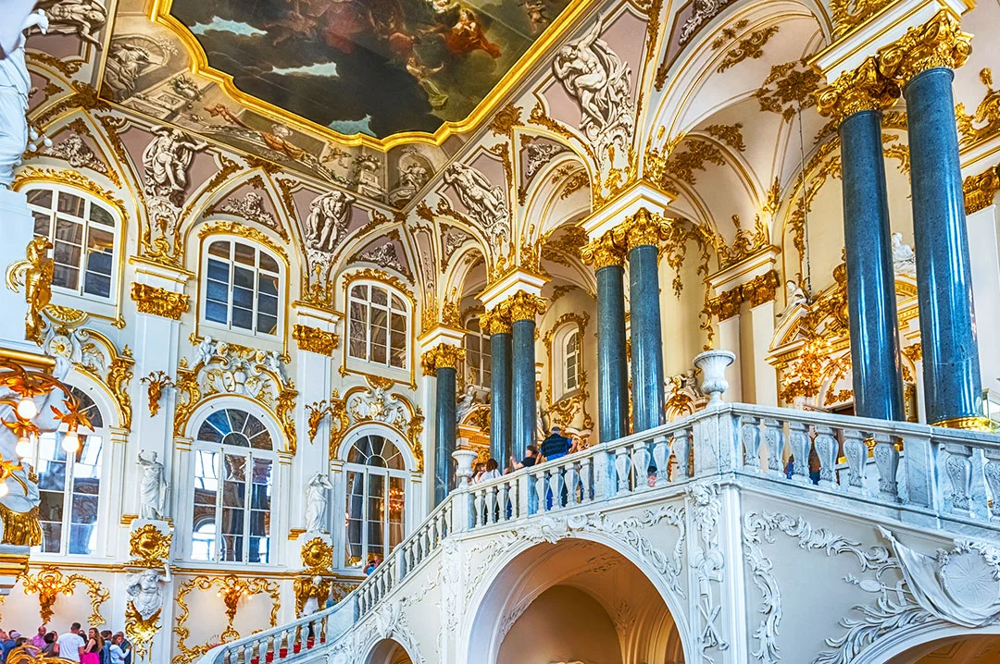
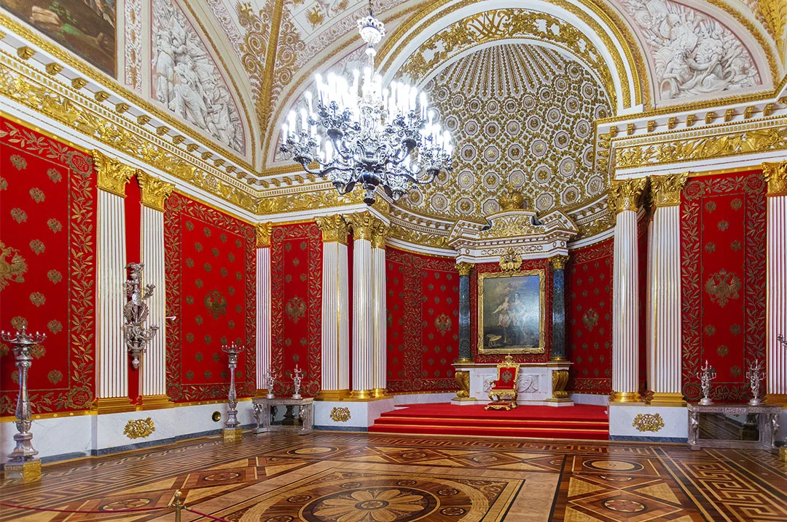
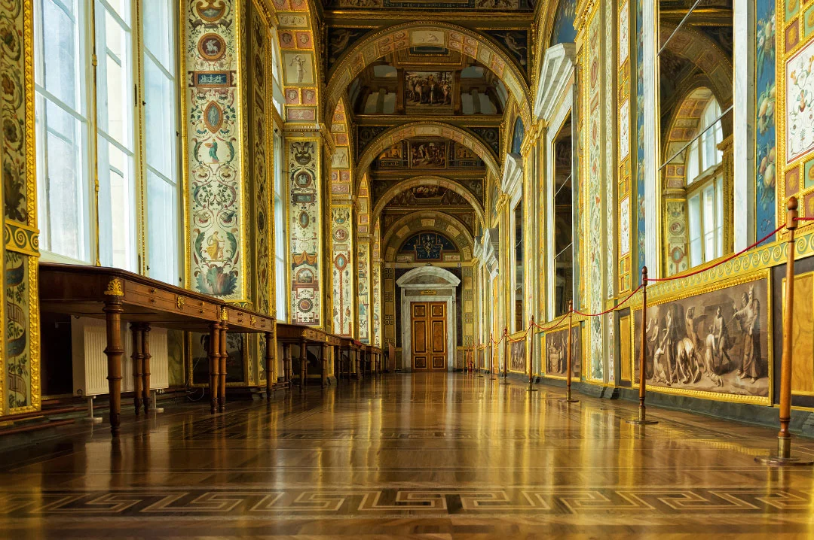

Зимний дворец в Санкт-Петербурге
Автор: Ольга Каширина
Исторический материал о Зимнем дворце: устройство здания, связанные с ним события и интересные детали. Вариант для подготовки к знакомству с дворцовой частью города.
Читать полную статью на блоге Островка →



Фото: Marco Rubino / Shutterstock.comИсточник изображения


Фото: vserg48 / Shutterstock.comИсточник изображения


Фото: Arthit Kaeoratanapattama / Shutterstock.comИсточник изображения